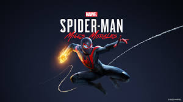
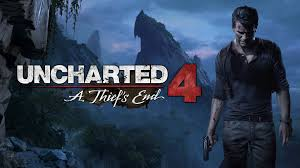
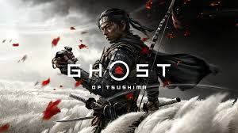

PlayStation o universo de games!
Experimente uma imersão sem igual com gráficos de última geração, tempos de carregamento ultrarrápidos e jogabilidade fluida. Mergulhe em mundos mais ricos e detalhados, e aproveite ao máximo seus jogos favoritos. Adquira já o seu Playstation e entre para o futuro dos games!
The Last of Us Part II

*The Last of Us Part II* é um dos jogos mais emocionantes e aclamados da PlayStation. A sequência do aclamado título de 2013 traz uma narrativa intensa, explorando temas como vingança, sobrevivência e sacrifícios em um mundo devastado.
- Gênero: Ação / Aventura / Stealth
- Data de Lançamento: Junho de 2020
- Plataforma Exclusiva: PlayStation 4
God of War (2018)

Em *God of War (2018)*, Kratos, o deus da guerra, se vê em uma jornada ao lado de seu filho Atreus, enfrentando deuses e monstros da mitologia nórdica. A nova perspectiva de câmera e o foco na narrativa tornam este título um dos melhores da franquia.
- Gênero: Ação / Aventura
- Data de Lançamento: Abril de 2018
- Plataforma Exclusiva: PlayStation 4
Spider-Man: Miles Morales
Em *Spider-Man: Miles Morales*, você assume o papel do jovem Miles enquanto ele aprende a dominar seus novos poderes e se torna o herói de Nova York. A jogabilidade dinâmica e a história empolgante fazem deste título uma das grandes aventuras do PlayStation 5.
- Gênero: Ação / Aventura / Mundo aberto
- Data de Lançamento: Novembro de 2020
- Plataforma Exclusiva: PlayStation 4, PlayStation 5
Uncharted 4: A Thief's End
*Uncharted 4: A Thief's End* é a última aventura de Nathan Drake, o caça-tesouros. Com gráficos deslumbrantes, uma narrativa envolvente e uma jogabilidade refinada, é um dos títulos mais aclamados da PlayStation 4.
- Gênero: Ação / Aventura
- Data de Lançamento: Maio de 2016
- Plataforma Exclusiva: PlayStation 4
Ghost of Tsushima
Em *Ghost of Tsushima*, você entra no papel de Jin Sakai, um samurai que deve se adaptar e usar novas técnicas de combate para defender sua ilha natal, Tsushima, contra uma invasão mongol. Com gráficos impressionantes e uma narrativa imersiva, este é um dos melhores jogos da PlayStation.
- Gênero: Ação / Aventura / Mundo aberto
- Data de Lançamento: Julho de 2020
- Plataforma Exclusiva: PlayStation 4, PlayStation 5